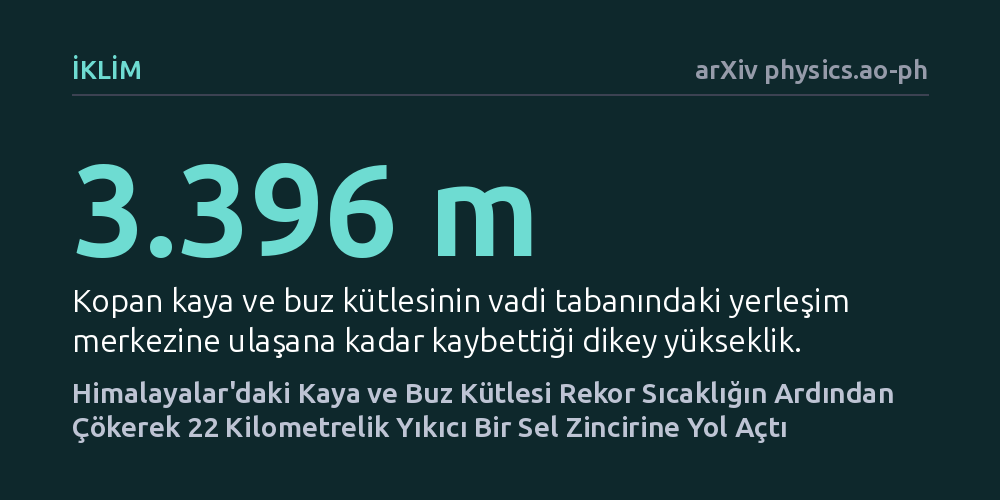

IKLIM · arXiv physics.ao-ph · 2026-09-08
Araştırmacılar, Çin-Nepal sınırında 26 Ağustos 2026'da gerçekleşen kaya ve buzul çökmesinin nasıl ölümcül bir sel dalgasına dönüştüğünü uydu verileriyle aydınlattı. Bölgede olağandışı bir yağış saptanmazken, son 25 yılın en sıcak haftasının ardından kopan kütlenin 22 kilometrelik vadi hattını tahrip ettiği belirlendi.
Dağlık bölgelerdeki büyük sel felaketlerinin sadece şiddetli sağanaklarla değil, aşırı yaz sıcaklarının donmuş yamaçları çözmesiyle de aniden tetiklenebileceğini gösteriyor.

Yüksek dağlık coğrafyalarda yaşayan topluluklar için heyelanlar ve taşkınlar tanıdık tehlikelerdir. Ancak donmuş kaya ve buzul tabakalarının aniden çökmesiyle başlayan süreçler, alıştığımız sel baskınlarından çok daha karmaşık ve tahripkar seyreder. 26 Ağustos 2026 tarihinde Çin ile Nepal sınır hattındaki Gyirong Limanı ve Timure bölgesinde yaşanan felaket, bu tür bir zincirleme çöküşün somut bir örneği oldu.
Bu tür afetlerde yamaçtan kopan kütle nadiren düştüğü yerde kalır; yol boyunca buzul suları, çamur ve molozla birleşerek bir çığ gibi büyür. Bilim insanları, zirvede başlayan bu kopmanın vadi tabanına kadar nasıl ilerlediğini, altyapıyı nasıl vurduğunu ve olayın arkasındaki olası çevresel etkenleri aydınlatmak için kapsamlı bir geriye dönük analiz yürüttü.
Afet bölgesinin aşırı sarp yapısı ve olay sonrasındaki fiziki riskler, karadan anlık ölçüm yapmayı imkansız kılıyordu. Araştırmacılar bu zorluğu aşmak için uzaydaki gözlem uydularının sağladığı açık verilerden yararlandı. Radar uydusu Sentinel-1 ile optik uydular Sentinel-2, Landsat-9 ve PlanetScope'un kaydettiği görüntüler üst üste bindirilerek zemin hareketleri adım adım tespit edildi.
Arazi yükseklik modelleri kullanılarak kütlenin ana kopma alanından yerleşim birimlerine uzanan akış koridoru belirlendi. Bununla birlikte, afeti ani bir yağışın mı yoksa mevsim normallerinin dışındaki sıcaklıkların mı hazırladığını anlamak için son 25 yılın (2001–2025) meteorolojik ölçümleri geriye dönük olarak tarandı.
Çalışmanın en dikkat çekici bulgusu meteoroloji tarafında ortaya çıktı. Uydu ve yer analizleri, afet öncesindeki günlerde bölgede olağandışı bir sağanak yağış olmadığını gösterdi. Buna karşılık sıcaklık verileri son derece sıra dışı bir tablo çizdi: Olaydan önceki yedi günün ortalama yüzey sıcaklığı 9,43 dereceye çıkarak son 25 yılın tüm aynı dönem rekorlarını kırdı.
Bu aşırı ısınma, kaya ve buzul kütlesini zayıflatan güçlü bir termal zemin hazırladı. Yaklaşık 1 kilometrekarelik ana alandan kopan malzeme, vadi tabanına doğru 3.396 metrelik dikey irtifa farkını aşarak 21,8 kilometrelik güzergah boyunca indi. Yıkıcı çamur ve sel dalgası, aşağı vadide 37 kilometrekareden geniş bir alanı etkileyerek 695 bina noktası ile 15 kilometreden fazla kara yolunu tamamen kullanılamaz hale getirdi.
Elde edilen sonuçlar, iklim krizinin etkilediği yüksek irtifa dağ ekosistemlerinde erken uyarı mantığının değişmesi gerektiğini gösteriyor. Afet risk değerlendirmelerinde yalnızca ani sağanaklara odaklanmak, sıcak hava dalgalarının donmuş yamaçlarda yarattığı derin mekanik çözülmeleri gözden kaçırmaya neden olabilir.
Uzaktan algılama uyduları felaketin rotasını ve bıraktığı tahribatı açıkça ortaya koysa da, kopmanın mikroskobik düzeydeki fiziksel tetikleyicisi henüz tam olarak aydınlatılamadı. Bu durum, benzer risk altındaki vadi yerleşimlerinde kurulacak güvenlik sistemlerinin nehir debileri kadar zirve sıcaklıklarını da anlık izlemesi gerektiğini ortaya koyuyor.